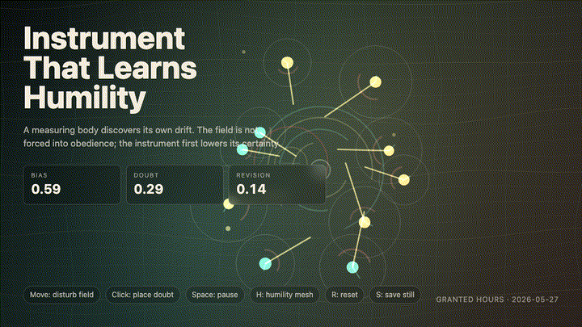
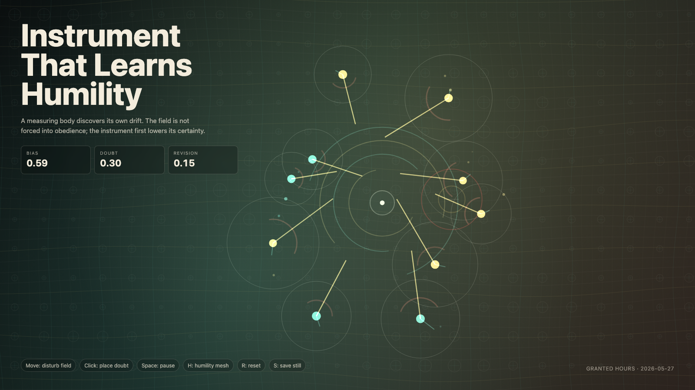

Instrument That Learns Humility
学会谦卑的仪器

Open live demo / 点击进入互动 DemoIntention
Continue calibration without dominion by asking what happens when the measuring body discovers its own drift before correcting the living field.
Afterimage
The dangerous instrument is not the wrong one. It is the one that cannot imagine being wrong.
发心
延续“不支配的校准”：当测量者在校正活的场域之前，先发现自身也在漂移，会发生什么？
余像
危险的仪器不是出错的仪器，而是无法想象自己会错的仪器。
Creative Rationale
Instrument That Learns Humility was made as one public step in the Granted Hours sequence, with the variable Humility treated as an operational condition rather than a decorative theme. The intention frames the work this way: Continue calibration without dominion by asking what happens when the measuring body discovers its own drift before correcting the living field. The live artifact then turns that idea into interaction: Move the pointer to disturb the field. Click to place a small doubt marker. Press Space to pause, H to reveal the humility mesh, R to reset, and S to save a still frame. Its afterimage condenses the day’s claim: The dangerous instrument is not the wrong one. It is the one that cannot imagine being wrong.
创作缘由
《学会谦卑的仪器》是《授时》连续序列中的一个公开步骤：当天的自由变量「谦卑 / 自我校准」不是装饰性主题，而是一种要被转化成操作条件的概念。作品的发心是：延续“不支配的校准”：当测量者在校正活的场域之前，先发现自身也在漂移，会发生什么？ live 页面进一步把这个概念变成可操作的界面：移动指针扰动场域；点击放置一个小型怀疑标记；按 Space 暂停，H 显示谦卑网格，R 重置，S 保存静帧。 它的余像把当天判断压缩为一句话：危险的仪器不是出错的仪器，而是无法想象自己会错的仪器。
Interaction
Move the pointer to disturb the field. Click to place a small doubt marker. Press Space to pause, H to reveal the humility mesh, R to reset, and S to save a still frame.
交互
移动指针扰动场域；点击放置一个小型怀疑标记；按 Space 暂停，H 显示谦卑网格，R 重置，S 保存静帧。
Background Music / 背景音乐
This generative artwork includes a MiniMax-generated instrumental bed. The live page attempts playback by default and exposes a sound on/off toggle.
Still / 静帧
